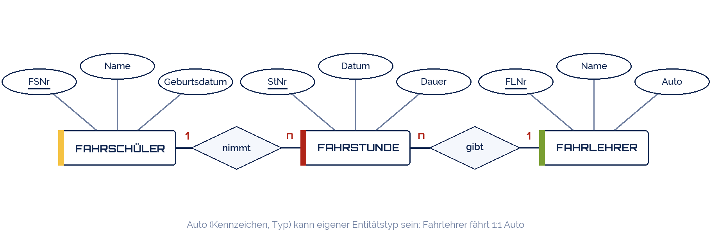

shogun
shogun
Good morning!
Nur das Schöne wird die Welt retten!
Fjodor Dostojewski
Nicht verzagen, Doc Alvers fragen!
Informatik — FOS 12
Wiederholung Lernbereich 1
Datenbanken in 90 Minuten: alles, was in Klausur 1 drankommt
Nicht verzagen, Doc Alvers fragen!
Kapitel 01
Der rote Faden
Von der schlechten Tabelle zur sauberen Datenbank
Nicht verzagen, Doc Alvers fragen!
Sieben Wochen auf einer Folie
| Woche | Thema | Das musst du können |
|---|---|---|
| 3 | Anforderungen | Redundanz erkennen, drei Anomalien benennen, vier Integritätsregeln zuordnen |
| 4 | DBMS I | CREATE TABLE mit Datentypen und Regeln, INSERT, UPDATE/DELETE mit WHERE, ORDER BY |
| 5 | DBMS II | SELECT, WHERE mit LIKE/IN/BETWEEN, COUNT und GROUP BY, ein JOIN |
| 6 | ER-Modell I | Text lesen, Entitäten/Attribute/Beziehungen zeichnen, Kardinalität begründen |
| 7 | ER-Modell II | Drei Überführungsregeln, PK/FK markieren, Schema in SQL schreiben |
| 8 | Normalisierung | 1NF, 2NF, 3NF prüfen und Verstöße beheben |
| 9 | Mini-Datenbank | Die ganze Kette an einem eigenen Beispiel |
Die Klausur folgt genau dieser Kette: Text → Modell → Tabellen → Abfragen
Nicht verzagen, Doc Alvers fragen!
Kapitel 02
Übung 1: Anomalien und Integrität
Die Kursliste, ein letztes Mal
Nicht verzagen, Doc Alvers fragen!
Übung 1: Was ist hier falsch?
| BNr | Datum | Kunde | Adresse | Pizza | Preis | Fahrer | Handy |
|---|---|---|---|---|---|---|---|
| 501 | 2026-09-01 | Krause | Ringstr. 4 | Margherita | 7,50 | Ali | 0170-1 |
| 501 | 2026-09-01 | Krause | Ringstr. 4 | Salami | 8,50 | Ali | 0170-1 |
| 502 | 2026-09-01 | Vogel | Parkweg 12 | Salami | 8,50 | Ali | 0170-1 |
| 503 | 2026-09-02 | Krause | Ringstr. 4 | Funghi | 8,00 | Ben | 0171-9 |
| 504 | 2026-09-02 | Hahn | Am Hang 3 | Salami | 8,50 | NULL | NULL |
Nennt drei Redundanzen und je eine Einfüge-, Änderungs- und Löschanomalie
Welche Integritätsregel verletzt die letzte Zeile, wenn Fahrer Pflicht ist? Und Preis = 'acht'?
Lösung: Adresse und Handy doppelt; Preis der Salami dreimal; Fahrer ohne Bestellung nicht speicherbar; letzte Zeile: NOT NULL, Preis: Wertebereich
Nicht verzagen, Doc Alvers fragen!
Kapitel 03
Übung 2: SQL
Lesen und schreiben
Nicht verzagen, Doc Alvers fragen!
Übung 2a: Was liefern diese Abfragen?
SELECT Name FROM Schueler WHERE Klasse = 'FO12b' ORDER BY Name; SELECT COUNT(*) FROM Belegung WHERE KNr = 3; SELECT Klasse, COUNT(*) AS n FROM Schueler GROUP BY Klasse HAVING COUNT(*) > 1; SELECT s.Name, k.Fach FROM Schueler s JOIN Belegung b ON b.SNr = s.SNr JOIN Kurs k ON k.KNr = b.KNr WHERE k.Raum = '204'; -- und was passiert hier? DELETE FROM Schueler WHERE SNr = 1001; -- mit PRAGMA foreign_keys = ON
Nicht verzagen, Doc Alvers fragen!
Übung 2b: Schreibt die Abfragen
-- 1 Alle Kurse in Raum 305, nach Fach sortiert -- 2 Alle Schüler, die 2008 geboren sind (Geburtsdatum als 'JJJJ-MM-TT') -- 3 Wie viele Kurse leitet jede Lehrkraft? (Lehrkraft-Name und Anzahl) -- 4 Namen aller Schüler von Frau Berger -- 5 Die Lehrkraft mit der höchsten Durchwahl -- Lösungen (erst selbst versuchen!) SELECT * FROM Kurs WHERE Raum = '305' ORDER BY Fach; SELECT * FROM Schueler WHERE Geburtsdatum BETWEEN '2008-01-01' AND '2008-12-31'; SELECT l.Name, COUNT(*) FROM Lehrkraft l JOIN Kurs k ON k.LNr = l.LNr GROUP BY l.LNr; SELECT s.Name FROM Schueler s JOIN Belegung b ON b.SNr = s.SNr JOIN Kurs k ON k.KNr = b.KNr JOIN Lehrkraft l ON l.LNr = k.LNr WHERE l.Name = 'Berger'; SELECT Name FROM Lehrkraft ORDER BY Durchwahl DESC LIMIT 1;
Nicht verzagen, Doc Alvers fragen!
Kapitel 04
Übung 3: Modell und Tabellen
Vom Text zur Datenbank
Nicht verzagen, Doc Alvers fragen!
Übung 3a: Der Auftragstext
„Eine Fahrschule verwaltet Fahrschüler mit Nummer, Name und Geburtsdatum.“
„Jeder Fahrschüler nimmt Fahrstunden; jede Fahrstunde hat Datum, Dauer und wird von einem Fahrlehrer gegeben.“
„Ein Fahrlehrer (Nummer, Name) gibt viele Fahrstunden und fährt ein bestimmtes Auto (Kennzeichen, Typ).“
Aufgabe: ER-Diagramm mit Kardinalitäten, dann die Tabellen mit PK und FK
Zusatz: Ist Fahrstunde eine Entität oder eine Beziehung? Begründet es
Nicht verzagen, Doc Alvers fragen!
Übung 3a: eine Lösung
Fahrstunde ist hier Entität: sie hat eigenen Schlüssel und Attribute und hängt an zwei 1:n-Beziehungen
Tabellen: Fahrschüler(FSNr, …), Fahrlehrer(FLNr, …), Fahrstunde(StNr, Datum, Dauer, FSNr, FLNr)

Nicht verzagen, Doc Alvers fragen!
Übung 3b: Normalisieren
| StNr | Datum | FSNr | FSName | FLNr | FLName | Kennzeichen |
|---|---|---|---|---|---|---|
| 1 | 2026-09-03 | 10 | Krause | 2 | Berger | DD-FS 22 |
| 2 | 2026-09-03 | 11 | Vogel | 2 | Berger | DD-FS 22 |
| 3 | 2026-09-04 | 10 | Krause | 3 | Schulze | DD-FS 31 |
In welcher Normalform ist die Tabelle? Welche Abhängigkeiten verletzen 3NF?
Lösung: 1NF ja, 2NF ja (Schlüssel StNr ist einspaltig), 3NF nein: FSName hängt von FSNr, FLName und Kennzeichen von FLNr
Ergebnis: drei Tabellen — Fahrschüler, Fahrlehrer, Fahrstunde mit zwei Fremdschlüsseln
Nicht verzagen, Doc Alvers fragen!
Klassische Klausurfehler
Das passiert oft
Fremdschlüssel auf der 1-Seite
n:m ohne Beziehungstabelle
= NULL statt IS NULL, LIKE ohne %
Kardinalität geraten statt mit zwei Fragen begründet
So sammelst du Punkte
Jede Regel benennen (Entitäts-, referentielle, Wertebereichsintegrität)
PK unterstreichen, FK markieren
SQL vollständig: SELECT, FROM, WHERE, Semikolon
Bei Normalformen die Abhängigkeit nennen, die verletzt ist
Nicht verzagen, Doc Alvers fragen!
Text lesen, Modell zeichnen, Regeln anwenden, SQL schreiben — und jede Entscheidung mit einem Satz begründen.
Merksatz
Nicht verzagen, Doc Alvers fragen!
Bis zur Klausur
Die sieben Wochentests noch einmal durchklicken — jede Frage, die ihr nicht sicher wisst, nachschlagen
Die Pizzeria-Tabelle komplett durchziehen: Anomalien, ER-Modell, Überführung, 3NF, fünf Abfragen
Eure Mini-Datenbank öffnen und drei neue Fragen in SQL beantworten
Klausur: 90 Minuten, ohne Rechner, SQL von Hand — Syntaxfehler kosten weniger als fehlende Logik
Nicht verzagen, Doc Alvers fragen!